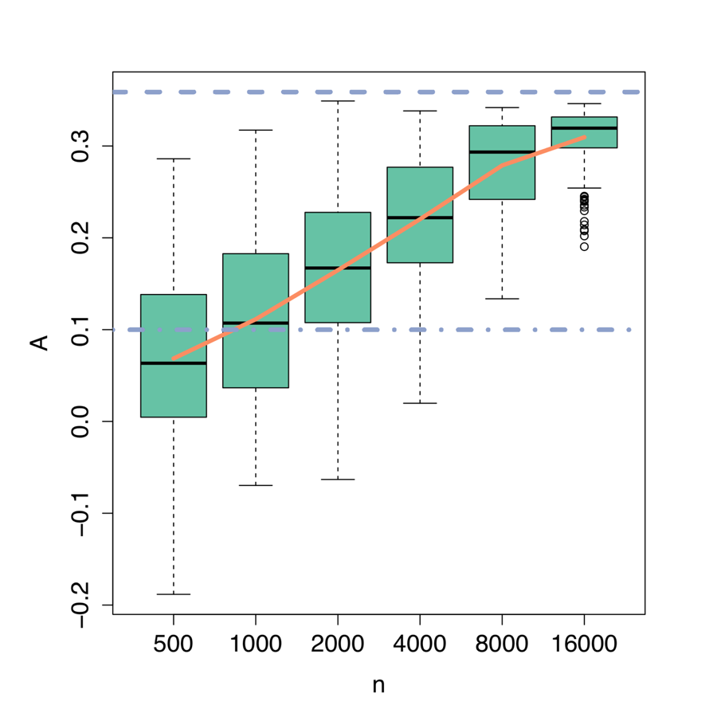
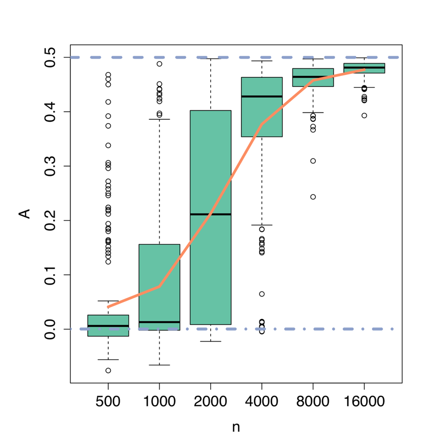

- \(\sqrt{\mathrm{VC}(\Pi)/n}\)学んだ方策の後悔が減る速さ（漸近的な上界）。深さ \(L\) の木の VC 次元はおおよそ \(2^L\log p\) で、深さを \(\kappa\log_2 n\)（\(\kappa<1/2\)）まで増やしても結果が当てはまる。
- 下界 0.33・上界 60同じ \(\sqrt{S\,\mathrm{VC}(\Pi)/n}\) の形の下界と上界に付く定数。この速さは定数倍を除いて改善できない（定理 1・5）。
- 0.091 対 0.043就労支援プログラム GAIN のデータで、深さ 2 の木を二重頑健スコアで学んだ場合と逆確率重みづけで学んだ場合の改善量（Table 2）。
方策学習では、決定木のように形を決めた方策の中で最良のものとの差（後悔）を小さくしたい
方策 \(\pi\) は個人の特徴 \(X_i\) を処置する・しないの判断 \(\pi(X_i)\in\{0,1\}\) に写す関数である。処置の割当てには、予算、公平性（使ってよい変数の制限）、現場での単純さなどの制約がつく。論文は例として、現場で判断する救急医療の担当者や警察官には単純な決定木が使えるかもしれないこと、ネットのサービスでは単純な表引きが応答を速くしうることを挙げる。こうした制約を、論文はあらかじめ決めた方策クラス \(\Pi\) で表す。
評価の基準は後悔（regret）である。誰にも処置しない場合と比べた方策の価値を \(V(\pi)\) とし、\(\Pi\) の中で最良の方策との差を後悔と呼ぶ。
\(\tau(x)\) は条件付き平均処置効果である。結果 \(Y_i\) は効用と読み、便益から個人ごとに異なりうる処置の費用を引いた値でもよい。比べる相手は「\(\Pi\) の中で最良の方策」なので、\(\tau(x)\) そのものを正確に推定できなくても、クラスの中でほぼ最良の方策を見つけることを目指す。この見方は Kitagawa and Tetenov（2018）にならっている。
論文は決定木を次のように再帰的に定義する。深さ 0 の木は全員に同じ判断 \(a\in\{0,1\}\) を返す。深さ \(L\) の木は分割に使う変数 \(j\) としきい値 \(t\) と、2 本の深さ \(L-1\) の木からなり、\(x_j\le t\) なら一方、そうでなければもう一方の木に従う。深さ \(L\) の木のクラスの VC 次元は \(\tilde O(2^L\log p)\) と抑えられる。
傾向スコアを推定する観察データでは、逆確率重みづけの保証は 1/√n より遅くなる
Kitagawa and Tetenov の方法は、方策と同じ処置を実際に受けた人だけを使い、その処置を受ける確率の逆数で重みをつけて方策の価値を見積もる（逆確率重みづけ、IPW）。
処置の割当て確率（傾向スコア）が既知なら、この方法の後悔は \(\sqrt{\mathrm{VC}(\Pi)/n}\) の速さで減り、標本サイズとクラスの複雑さへの依存は最適である。観察データでは傾向スコアを推定するしかなく、そのとき上界は傾向スコアの推定の速さに左右され、一般に \(1/\sqrt{n}\) より遅くなる。論文が知る限り、観察データの二値処置で \(1/\sqrt{n}\) の上界があったのは、方策が有限個の場合（van der Laan ら）と、結果の回帰を再生核ヒルベルト空間に仮定する場合（Kallus）だけだった。治験での不遵守のように処置が内生的な場合や、価格のような連続的な処置の場合にも使える方法が必要だと論文は述べる。
平均効果を推定するための二重頑健スコアを、そのまま木の目的関数に使う
二値の処置で、観測された共変量で交絡を調整できる場合、各個体の二重頑健スコア（AIPW スコア）は次の形になる。\(\hat m(x,w)\) は結果の回帰、\(\hat e(x)\) は傾向スコアの推定値で、どちらも交差適合（cross-fitting）により、その個体を含まない分割のデータから作る。
\(\hat\Gamma_i\) を平均すれば平均処置効果の推定量になる。論文は平均する代わりに、次の量を \(\Pi\) の中で最大にする方策を選ぶ。
この問題は \(\hat\Gamma_i\) の符号をラベル、絶対値を重みとする重みつき分類と数値的に同じである。\(\Pi\) を深さ \(L\) の木にすれば、重みつきの誤分類が最小の木を探す問題になる。枠組みは交絡を共変量で調整する二値処置のほか、連続的な処置をわずかに動かす介入（少し値引きするかどうかなど）と、操作変数で効果を識別する二値処置にも、スコアの重み関数を取り替えるだけで当てはまる。
手順 3 は凸な最適化問題ではないので、解くのは計算の面で難しいことがある。論文の実験では \(\Pi\) を深さを決めた決定木とし、著者らの R パッケージ policytree で解いている。計算の方針の詳細は Zhou らに譲っている。重みつき分類を解く方法として、論文は最良部分集合の経験リスク最小化や最適な木（Bertsimas and Dunn）を挙げる。CART のような再帰分割や SVM で近似的に解く方法も実用上は興味深いとしながら、理論の結果は重みつき分類を厳密に解く方法にしか当てはまらないと注意している。
後悔は √(VC(Π)/n) の速さで減り、この速さは定数倍を除いて改善できない
主定理（定理 1）は次の 3 つを仮定する。局外関数の推定誤差が十分速く減ること（たとえば結果の回帰と重み関数がともに \(L_2\) 誤差 \(o(n^{-1/4})\)）、重み関数が有界であること（二値処置なら傾向スコアが 0 と 1 から離れていること）、\(\Pi\) の VC 次元が \(n^{\beta}\)（\(\beta<1/2\)）より速く増えないことである。このとき、学んだ方策の後悔について次が成り立つ。
\(S_n^*\) は \(\Pi\) の中で最良の方策の改善量を二重頑健推定量で評価するときの漸近分散である。式では、信号対雑音比がとても大きい場合にだけ効く対数の補正項を省いた。結果は漸近的なもので、有限標本での上界を示した Kitagawa and Tetenov とはこの点が異なる。
決定木のクラスについては、定理から次の 2 点が言える。1 つ目に、深さ \(L\) の木の VC 次元は \(\tilde O(2^L\log p)\) なので、深さを \(L_n=\lfloor\kappa\log_2 n\rfloor\)（\(\kappa<1/2\)）まで標本とともに増やしても定理が当てはまる。2 つ目に、上界は目的関数の最大値から \(\psi_n\)（\(\sqrt n\,\psi_n\to 0\)）以内に入るすべての近似解に一様に成り立つ。最大化を厳密に解けなくても、この許容誤差の中に収まれば保証は残る。
下界（定理 5）は交絡のない二値処置で、処置効果の大きさが \(1/\sqrt n\) の割合で小さくなる問題の列を考える。このとき、どんな学習法でも最悪の場合の後悔は \(0.33\sqrt{S_{\mathcal P}\,\mathrm{VC}(\Pi)/n}\) を下回らない。同じ問題の列で主定理の上界は \(60\sqrt{S_{\mathcal P}\,\mathrm{VC}(\Pi)/n}\) になるので、速さも \(S_{\mathcal P}\) への依存も定数倍を除いて最適である。一方、Kitagawa and Tetenov の上界は \(|Y_i|\le M\)、\(\eta\le e(X_i)\le 1-\eta\) のもとで \((M/\eta)\sqrt{\mathrm{VC}(\Pi)/n}\) の形をしており、下界との比はいくらでも大きくなりうる。
証明の要は二重頑健スコアの性質である。後悔の小さい方策ほどスコアの分散が小さく正確に評価できるので、\(\Pi\) を後悔の大きさで切り分けて評価する。さらに、推定したスコアと真のスコアのずれが、1 つの方策について期待できるのと同じ大きさで \(\Pi\) 全体に一様に抑えられることを示す（補題 4）。論文は、二重頑健でない効率的な推定量でも同じように強い一様な評価が得られるかは、まったく明らかでないと述べる。単調なルール全体のように VC 次元が無限のクラスには、この結果は当てはまらない。
就労支援プログラムのデータでは、深さ 2 の木を二重頑健スコアで学ぶと、逆確率重みづけの木より改善量が大きかった
GAIN はカリフォルニア州の生活保護受給者向けの就労支援プログラムで、郡ごとにランダム化実験が行われた。論文は 4 郡（Alameda、Riverside、Los Angeles、San Diego）の 19,170 人と 28 個の共変量を使い、結果は実験後 9 年間の四半期平均所得（千ドル）とした。郡によって処置群の割合（0.50〜0.86）も対照群の平均所得（0.64〜1.04）も違うので、データを合わせると交絡が生じる。論文はこれを半人工の観察研究とみなし、共変量で交絡を調整できると仮定した。
平均処置効果の推定値（±1 標準誤差）は、二重頑健推定量で 0.141 ± 0.026、郡ごとの真の処置割合を使った推定量で 0.146 ± 0.028、単純な平均の差で 0.208 ± 0.028 だった。局外関数は一般化ランダムフォレストで推定し、処置 1 件あたりの費用 \(C=0.14\) をスコアから引いた。\(C\) は平均処置効果とほぼ同じ値で、効果の異質性を使わなければ価値を上げられない設定にしている。人種・民族・年齢・性別の変数は交絡の調整には使い、木の分割には使っていない。
3 四半期前に収入があった約 3/4 の人には、深さ 1 と深さ 2 の木が同じ判断をする。深さ 2 の木は、収入がなかった人にだけ別の規則（子どもがいるかどうか）を使う。
木の深さの選択と方策の評価には 10 分割の交差検証を使った。各分割を除いたデータで方策を学び、除いた分割のスコアで改善量 \(\hat A_{\mathrm{CV}}=\frac1n\sum_i(2\hat\pi^{(-k(i))}(X_i)-1)\,\hat\Gamma_i\) を求める。比べたのは、二重頑健スコア（AIPW）で学んだ深さ 1・2 の木、同じ傾向スコアを使う逆確率重みづけ（IPW）の深さ 1・2 の木、形の制約なしに因果フォレストの予測が \(C\) を超える人を処置するプラグイン方策である。
深さ 2 の AIPW の木は深さ 1 の木よりはっきりよく、形の制約がないプラグイン方策とも互角だった。論文はこの結果から深さ 2 の木を選んでいる。IPW では逆に、深さ 2 の木のほうが深さ 1 より改善量が小さかった。郡ごとの真の処置割合で評価し直すとすべての値が下がったが、方法の順位は変わらなかった。論文は、推定した傾向スコアによる評価は順位を正しく示したが、学んだ方策の質をやや楽観的に見積もっていたと述べる。\(\hat A_{\mathrm{CV}}\) は \((2\pi-1)\) を掛けた形なので、全員に確率 1/2 で処置する場合と比べた価値の差の 2 倍にあたる（解説者の注）。
内生的な処置のシミュレーションでも、標本が増えるにつれて深さ 2 の木の改善量はクラス内の最良の値に近づいた
操作変数のシミュレーションでは、10 次元の正規分布の特徴量、二値の操作変数 \(Z\)、誤差項と相関する内生的な二値処置 \(W\) を生成した。スコアは遵守率で割った重みを使う二重頑健スコアで、局外関数はすべて grf のフォレストで推定した。処置効果は 2 通りで、連続な \(\tau(x)=((x_1)_++(x_2)_+-1)/2\) と、符号で跳ぶ \(\tau(x)=\mathrm{sign}(x_1x_2)/2\) である。後者では制約のない最適な方策 \(\mathbf 1\{\tau(x)>0\}\) が深さ 2 の木で表せるが、前者では表せない。


図4 深さ 2 の木で学んだ方策の改善量 \(A(\hat\pi)\) の分布（論文 Figure 2、arXiv v6）。箱ひげ図は 200 回の繰り返し、実線は平均、下の水平線は特徴量を使わない最良の方策（全員処置か誰も処置しない）、上の水平線は \(\Pi\) の中での最大値。図の緑・オレンジ・青は論文の配色で、このページの色の意味（オレンジ＝逆確率重みづけ、青＝二重頑健スコア）とは対応しない。
どちらの設定でも、標本サイズとともに後悔が減り、クラス内の最良の値に近づいた。連続な効果では改善量が滑らかに上がった。符号で跳ぶ効果では、\(n\) が 2,000 から 4,000 の間で、木が効果の跳びにおおよそ合う分割を安定して選べるようになり、相転移のような急な変化が見られた。
補足資料では価格をわずかに動かすような連続的な処置の微小な変化を扱う（費用 \(C=0.2\)、深さ 2 の木）。学んだ方策の価値は、\(n\) が 600 から 16,200 に増えると、処置の条件付き分布が正規の設定で 0.014 から 0.029、正規でない設定で 0.018 から 0.037 に上がった。ただし平均微分の二重頑健推定量はバイアスが大きく、論文は、セミパラメトリック効率の漸近論がよくてもゆっくりとしか当てはまらない、難しいノンパラメトリックな問題だとみている。
木で表した方策をどの目的関数で学べば、後悔の統計的な保証が得られるかを示す
この論文の中心は木の探索アルゴリズムではなく、観察データから方策を学ぶときの目的関数と、その最大化で得た方策の後悔の保証にある。決定木は、保証が当てはまる方策クラスの代表例であり、実験で使うクラスでもある。
- 分岐の種類：単変量（1 つの変数としきい値で分ける、軸に平行な分岐）。葉は「処置する・しない」の二値。実験は深さ 1 と 2。
- 目的関数：二重頑健スコアの重みつき和 \(\sum_i(2\pi(X_i)-1)\hat\Gamma_i\)。符号をラベル、絶対値を重みとする重みつき分類と同じ。GAIN では費用 \(C\) を引いた \(\hat\Gamma_i-C\) を使う。
- 解き方：著者らの R パッケージ policytree。手法の詳細は Zhou ら（多値の行動への拡張）に譲っている。局外関数の推定と木の最大化は別々に選べる。
- 最適性の保証：統計的な保証（後悔の上界と、それに定数倍で一致する下界）。最大化を厳密に、または \(o(1/\sqrt n)\) 以内で解くことが前提で、再帰分割などの近似解法は対象外。木の探索の計算時間は報告していない。
- データ：カリフォルニア州の GAIN（19,170 人、28 個の共変量）、操作変数のシミュレーション、補足資料の連続的な処置のシミュレーション。
同じリストの処方的な木と比べると、役割の違いが分かる（解説者の注）。Optimal Prescriptive Trees は処方の結果と予測誤差を重みつきで足した目的を局所探索で最適化する。この論文は目的を二重頑健スコアの和だけにし、最大化を厳密に解けば後悔が最適な速さで減ることを示した。Zhou らはこれを多値の行動に広げ、木を厳密に探索する方法を示している。Optimal Policy Trees は二重頑健な報酬の推定値の合計を目的にして、木を局所探索で学ぶ。Jo らは観察データから推定した方策の価値を目的に、処方的な木を混合整数最適化で求める。最適決定木の解法は、この論文の保証が前提とする「最大化を厳密に解く」部分を担いうる、という関係にある。
このページの数値・定理番号・定数・図表番号は arXiv 1702.02896 v6（2020 年 9 月 4 日）の本文と表による。Econometrica 掲載版の本文は自動取得できなかったため、照合していない。巻・号・ページは Crossref と Econometric Society のページで確認した。所属は arXiv 版に書かれたメールアドレス（stanford.edu）による。
@article{athey2021policy,
title = {Policy Learning With Observational Data},
author = {Athey, Susan and Wager, Stefan},
journal = {Econometrica},
volume = {89},
number = {1},
pages = {133--161},
year = {2021},
doi = {10.3982/ECTA15732}
}